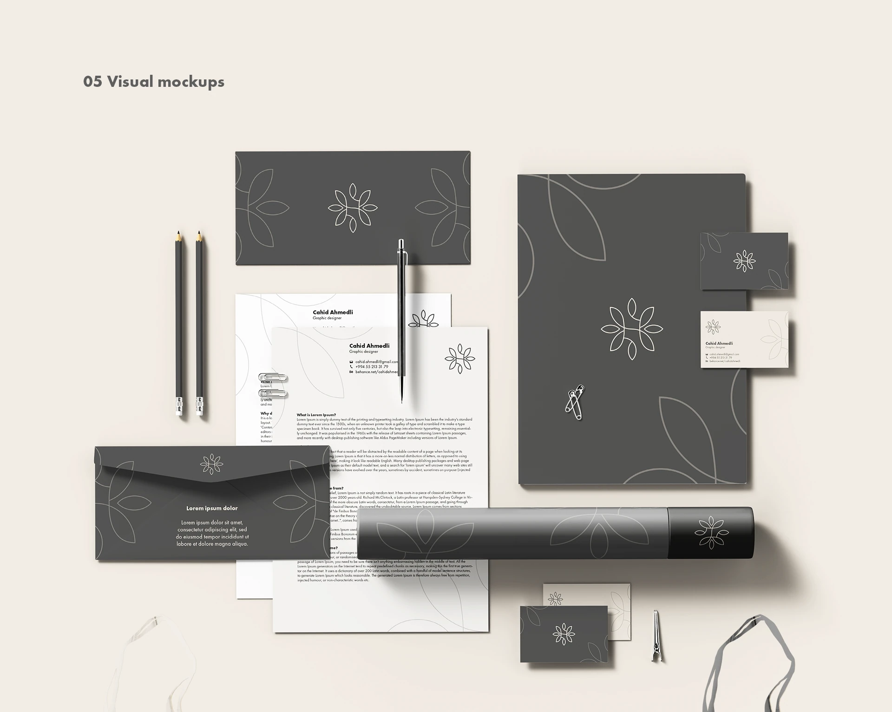
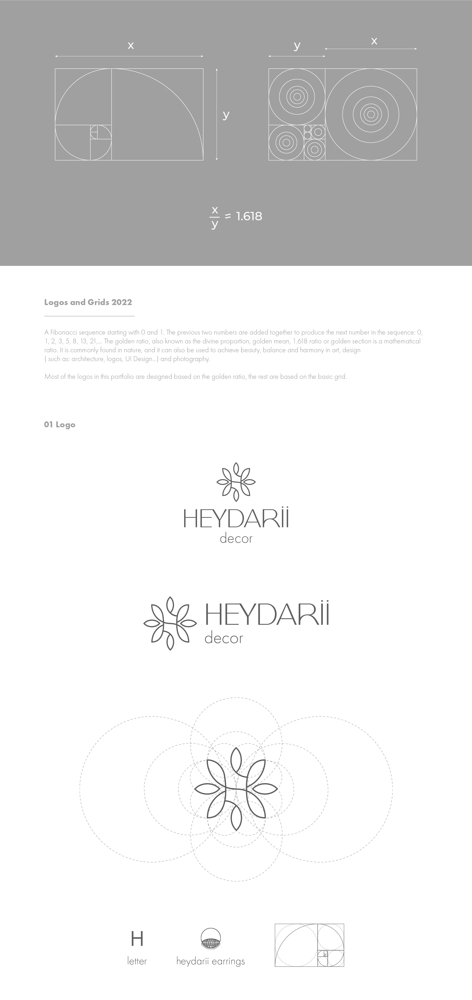
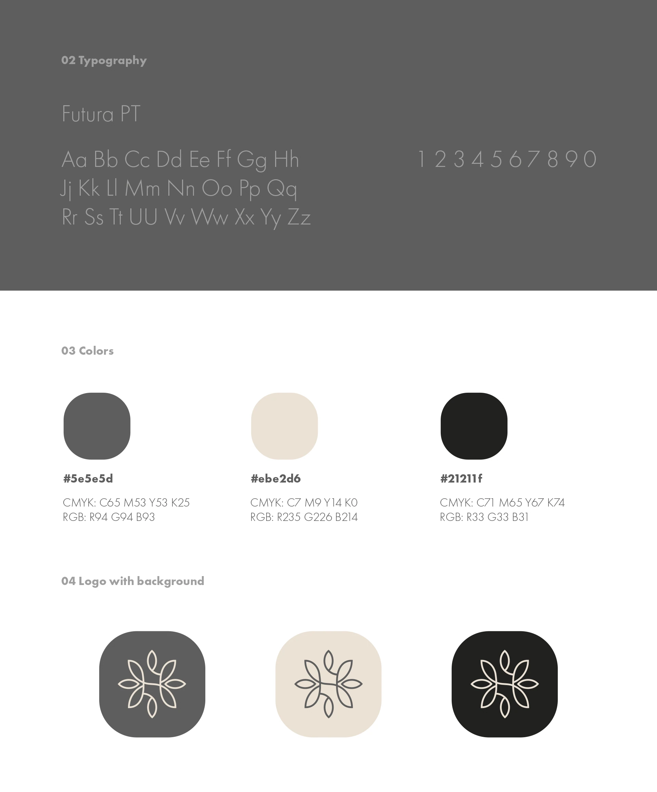
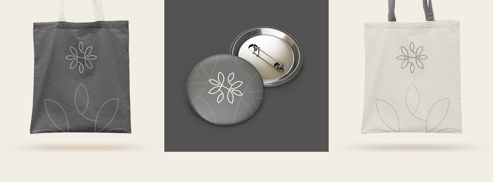

Konstruksiya
Dairə və qızıl nisbət loqonun sabit skeletini yaradır.
Brand Identity
Qızıl nisbət və zinət formalarının ritmi əsasında qurulan, zərifliklə funksionallığı birləşdirən loqo və tətbiq sistemi.

01 / Ümumi baxış
Simvol “H” hərfini, sırğa formasını və təkrarlanan yarpaq ritmini bir yığcam konstruksiyada birləşdirir.
Qızıl nisbət loqonun formalarını və aralarındakı vizual balansı müəyyən edir.
Neytral boz, krem və qara palitra zinət məhsullarını ön plana çıxaran sakit və premium fon yaradır.
02 / Yanaşma
Dairə və qızıl nisbət loqonun sabit skeletini yaradır.
İncə xətlər və yumşaq əyrilər zinət əşyalarının xarakterini daşıyır.
Simvol qablaşdırma, çanta, nişan və korporativ materiallarda bütöv işləyir.
03 / Vizual kimlik



04 / Dizayn sistemi
Qızıl nisbət elementlər arasında vizual harmoniya qurur.
İncə konturlar premium və yüngül hiss yaradır.
Loqodan yaranan formalar səthlərdə ardıcıl ritm yaradır.
05 / Növbəti
Növbəti layihəPAŞA Kapital Kampaniyaları